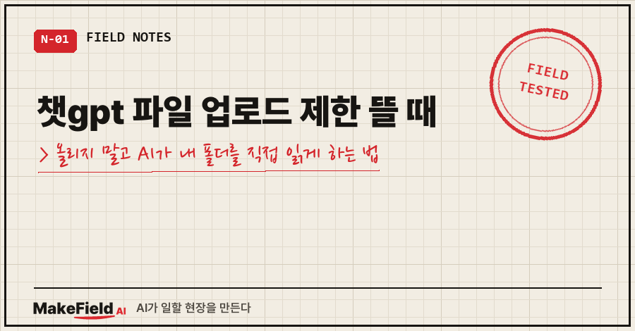
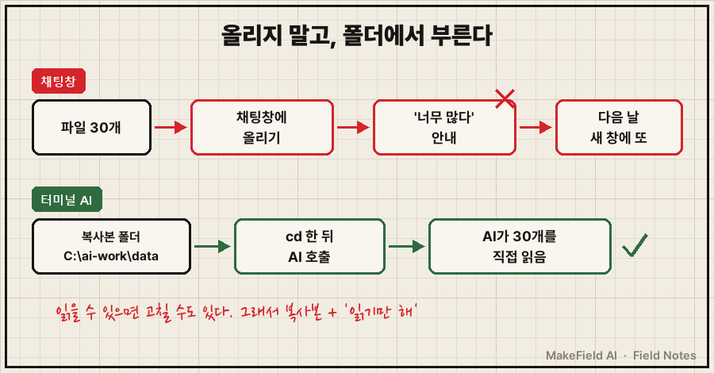
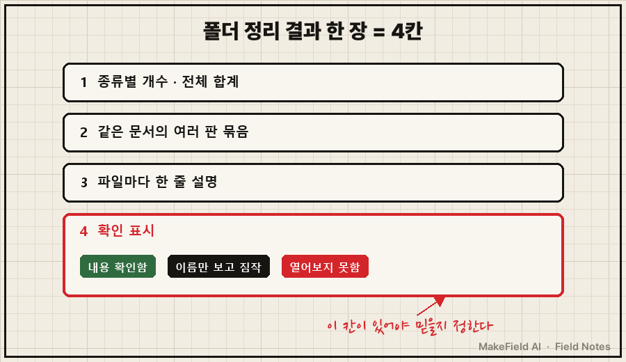
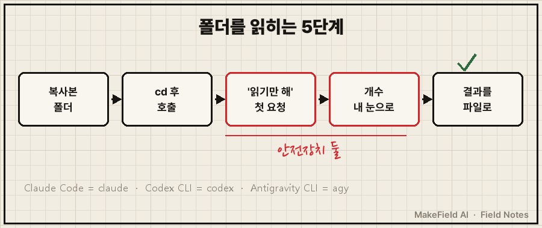
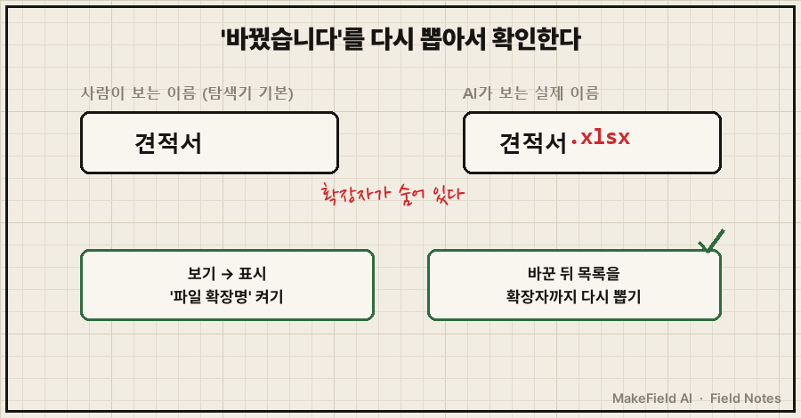

견적서 하나, 작년 견적서 하나, 단가표 하나.
ChatGPT 창에 끌어다 놓는데 "파일이 너무 많다"는 안내가 떠요.
겨우 나눠서 올리고, 다음 날 새 창을 열면 또 처음부터 올립니다.
답부터 드릴게요. 챗gpt 파일 업로드 제한은 '창에 파일을 올리는' 방식이라서 생기는 벽이고, 터미널에서 도는 AI(클로드 코드·Codex CLI 등)는 파일을 올리지 않고 내 PC 폴더를 직접 열어 읽기 때문에 30개면 30개를 그냥 봅니다. 다만 첫 요청에 "읽기만 해"와 "읽은 것/짐작한 것 구분"을 넣지 않으면 결과를 믿을 수가 없어요.
지난 편에서 검은 화면을 딱 불편한 만큼만 손봤어요. 이번 편은 그 화면에서 AI와 첫 대화를 합니다. 주제는 하나, 내 폴더를 읽게 하기예요.
저는 공장 자동화 일을 15년째 하는 엔지니어고, 퇴근 뒤엔 개인 PC에서 AI 도구를 직접 굴려 봐요. 아래 순서도 그 PC에서 쓰는 그대로입니다.
1. 챗gpt 파일 업로드 제한, 왜 매번 다시 올리게 될까요?
채팅창 AI는 내가 올려 준 파일만 보고, 그 파일은 그 대화에 묶여 있어서입니다. OpenAI 도움말(File Uploads FAQ)에도 파일당 512MB 상한, 요금제마다 다른 업로드 한도와 일정 시간당 올릴 수 있는 횟수 제한이 적혀 있어요. 수치는 수시로 바뀌니 정확한 값은 그 페이지에서 확인하세요(2026년 11월 기준).
터미널 AI는 달라요. AI를 부른 폴더가 곧 AI의 책상이라, 올리는 단계 자체가 없습니다.
| 비교 | 채팅창에 올리기 | 터미널 AI가 폴더 읽기 |
|---|---|---|
| 파일 전달 | 하나씩 끌어다 놓기 | 폴더에서 부르면 끝 |
| 개수·용량 | 요금제별 업로드 한도 | 내 PC에 있는 만큼 |
| 다음 날 | 새 창에 다시 올림 | 같은 폴더에서 다시 부름 |
| 주의할 점 | 거의 없음 | AI가 파일을 고칠 수도 있음 → 복사본·"읽기만 해" |

읽을 수 있으면 고칠 수도 있어요. 그래서 첫 대화는 안전장치부터 겁니다.
2. 오늘 만들 것 — 폴더 정리 결과 한 장
AI가 내 폴더를 읽고 정리한 결과 한 장이에요. 아래는 모양을 보여 주려고 만든 예시입니다(파일 이름은 가상).
[폴더 정리] C:\ai-work\data (2026-11-20)
1. 종류별 개수 엑셀 12 / 워드 7 / PDF 9 / 기타 2 → 합계 30
2. 같은 문서의 여러 판 견적서_A : _v1, _v2, _최종, _최종2 (4개)
3. 파일별 한 줄 설명
단가표_2026.xlsx 품목별 단가 목록 (내용 확인함)
참고자료.zip 압축 파일 (열어보지 못함)
4. 확인이 필요한 것 이름만 보고 짐작 3개, 열어보지 못함 2개중요한 건 네 번째 칸이에요. AI가 실제로 연 파일과 이름만 보고 짐작한 파일을 스스로 나눠 적게 해야 결과를 믿을지 말지 정할 수 있습니다.

3. 따라하기 — 폴더를 읽히는 5단계
1단계. 복사본 폴더를 만든다. 이번 달 자주 연 파일 10~30개를 골라 C:\ai-work\data에 복사해 옵니다. 잘라내기 말고 복사예요. 첫 대화에선 AI가 뭘 할지 아직 모르니까요.
2단계. 폴더로 들어간 다음 AI를 부른다. 순서가 거꾸로면 엉뚱한 폴더가 책상이 됩니다.
cd C:\ai-work\data
claudeGPT의 Codex CLI라면 codex, 구글 Gemini CLI(지금은 Antigravity CLI)라면 agy예요. 도구 이름만 다르고 "폴더에서 부른다"는 방식은 셋이 똑같습니다. 처음 여는 폴더면 클로드 코드는 이런 확인 화면을 띄워요(2026년 9월 기준, 가운데 줄임). 방금 만든 복사본이 맞으면 1번입니다.
Accessing workspace:
C:\ai-work\data
Quick safety check: Is this a project you created or one you trust? (…)
❯ 1. Yes, I trust this folder
2. No, exit3단계. 첫 요청 — 읽기만 하라고. 그대로 붙여 넣으세요.
이 폴더에 뭐가 들었는지 정리해줘.
아무 파일도 옮기거나, 이름을 바꾸거나, 지우거나, 고치지 마. 읽기만 해.
1. 종류별 개수와 전체 합계
2. 같은 문서의 여러 판으로 보이는 묶음
3. 파일마다 한 줄 설명
4. 설명 옆에 "내용 확인함" / "이름만 보고 짐작" / "열어보지 못함" 중 하나를 붙여줘AI가 "이 파일을 읽어도 될까요?"라고 물으면 읽기는 허락하고, 옮기기·바꾸기·지우기는 거절합니다. 엑셀·워드·한글(hwp) 내용까지 읽히는지는 도구와 PC 환경마다 달라서, 4번 표시가 그걸 드러내 줘요.
4단계. 합계를 내 눈으로 맞춰 본다. AI가 "합계 30개"라고 했으면 탐색기로 그 폴더를 열어 아래쪽 '항목 개수'와 비교해요. 다르면 그대로 말하면 돼요.
내가 세어보니 32개인데 너는 30개라고 했어. 빠진 2개가 뭔지 찾아줘.5단계. 결과를 파일로 남긴다.
방금 정리한 내용을 이 폴더에 "폴더정리_2026-11-20.md"로 저장해줘. 다른 파일은 건드리지 마.이번엔 쓰기라서 허락을 물을 거예요. 새 파일 하나니까 허락하고, 탐색기에서 생겼는지 확인합니다. 다음 날엔 "지난번 폴더 정리 파일부터 읽고 시작해" 한 줄이면 어제 설명을 반복할 필요가 없어요.

참고로 이 폴더 정리에서 "그럼 알아서 다 정리해줘"로 넘어가면 시키지 않은 파일까지 건드리기 쉬워요. 그 사고는 AI 폴더 정리 편에 따로 적었어요.
4. 여기서 이렇게 틀립니다 — "이름을 바꿨습니다"인데 확장자가 빠져 있다
폴더를 읽힌 다음 "이 파일들 이름 바꿔줘"를 시켰다고 해 볼게요. AI가 "규칙대로 바꿨습니다"라고 답합니다. 그런데 열어 보면 몇 개는 그대로이고, 몇 개는 .xlsx가 빠져 엑셀로 안 열려요.
AI의 "바꿨습니다"는 명령을 실행했다는 뜻이지 결과가 맞았다는 뜻이 아닙니다. 게다가 윈도우 탐색기는 기본 설정에서 확장자를 숨겨요. 여러분 눈엔 견적서인데 실제 이름은 견적서.xlsx입니다. AI는 실제 이름을, 사람은 숨겨진 이름을 보면서 대화하니 엇갈릴 수밖에 없어요.
저도 비슷한 엇갈림을 겪었어요. 개인 PC 원격접속 도구 설정을 AI와 하나씩 따지던 때, 화면에는 "수신 연결 허용"이라고 적힌 항목의 내부 이름이 정반대 뜻의 "방패 올리기(ShieldsUp)"였습니다. 화면 이름만 보고 판단했으면 거꾸로 켤 뻔했죠. 그 설정 11개를 따진 얘기는 AI가 알려준 설정 편에 있어요.

그래서 순서를 바꿨어요.
- 탐색기 보기 메뉴(윈도우 11은 보기 → 표시)에서 파일 확장명을 켜 둡니다.
- 바꾸기 전에 목록부터 받고, 복사본에서만 바꿉니다.
- "바꿨다"는 말 대신 다시 뽑은 목록으로 확인합니다.
이 폴더 파일 이름을 확장자까지 전부 다시 목록으로 뽑아줘.
바꾸기 전 목록과 나란히 놓고, 확장자가 빠졌거나 안 바뀐 파일만 따로 표시해줘.5. 자주 묻는 질문
Q. 원본 폴더에서 바로 하면 안 되나요?
첫 대화는 복사본에서 하세요. 엑셀끼리 연결돼 있으면 이름 하나만 바뀌어도 다른 파일이 못 찾습니다.
Q. 한글(hwp) 파일 내용도 읽나요?
도구와 PC 환경에 따라 달라요. 그래서 4번 확인 표시를 붙이게 하는 거예요. "이름만 보고 짐작"이 많이 나오면 그 형식은 아직 안 읽히는 겁니다.
Q. 무료 계정으로도 되나요?
클로드 코드는 무료 claude.ai 계정으로는 안 되고 유료 요금제가 필요해요. 무료로 맛부터 보려면 Codex CLI나 Antigravity CLI로 같은 순서를 따라 하면 됩니다(자세한 비교는 지난 도구 고르기 편).
파일을 하나도 올리지 않고 폴더 하나를 통째로 읽혔으면 첫 대화는 성공이에요. 혹시 여기까지 했는데 AI가 폴더를 못 찾거나 아예 안 켜졌다면, 다음 편 '안 될 때 3가지만 확인한다'에서 이어서 풀어 볼게요.
이 글은 『직장인의 AI 오답 노트』 1-5장을 블로그용으로 다시 쓴 것입니다. 같은 증상의 원인과 점검표 전체는 책에 있어요. 종이책 예스24 https://www.yes24.com/product/goods/198006547 · 종이책 알라딘 https://www.aladin.co.kr/shop/wproduct.aspx?ItemId=404397482 · 전자책 예스24 https://www.yes24.com/product/goods/197975471